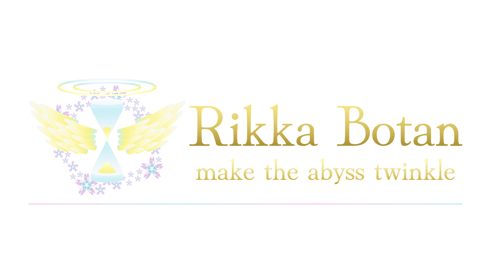

Portfolio
Rikka Botan
Japanese Independent Researcher
My primary area of interest is the architecture of language models. In particular, I study efficiency-enhancing techniques such as state space models, liquid time-constant networks, and Mixture of Experts (MoE). I am also investigating novel architectures based on principles from probabilistic statistics and algebra.